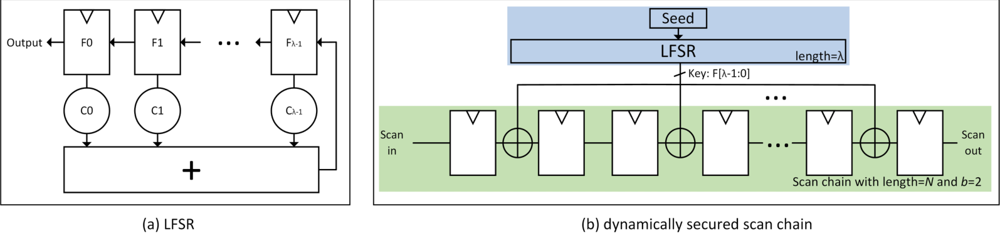
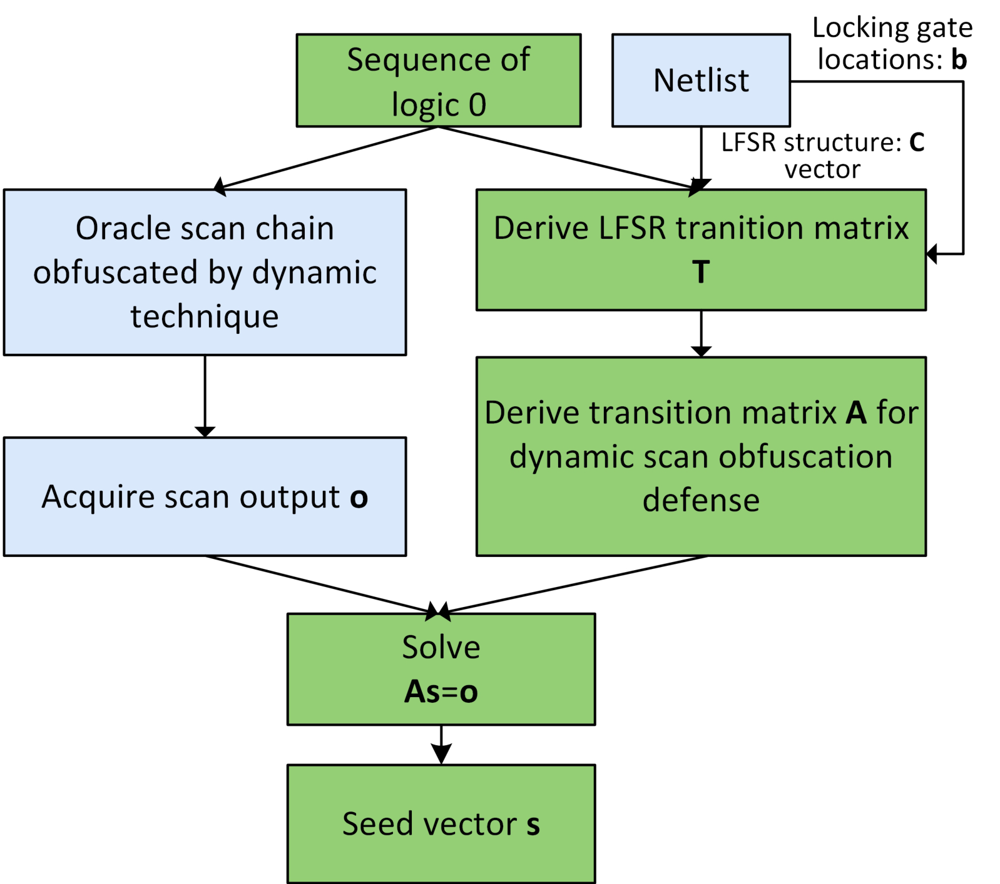
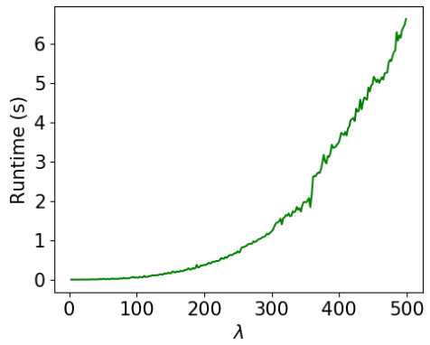

Dynamically secured scan chains and the GF-Flush attack
State-of-the-art scan-chain defenses use an LFSR-driven dynamic key to pseudo-randomly invert scan data, and existing SAT attacks on them are slow and assume the combinational logic is unlocked. GF-Flush models the LFSR, locking gates and MISR compactor as linear equations over GF(2) and recovers the secret LFSR seed by solving them.
Design
Threat model
The attacker knows the reverse-engineered netlist (LFSR feedback vector c, chain length N, locking-gate positions b) and has an oracle chip with the correct seed. Logic 0s are shifted into the obfuscated chain ("flushing") and the scan outputs o are captured.
GF(2) model of the defense
The LFSR is written as a transition matrix T, so its state at cycle t is T^t s for seed s. With all-zero inputs, each scan output is an XOR of key bits, i.e. one linear equation in s; lambda such equations form the system A s = o, which is solved over GF(2).
Bypassing the shadow chain
Recent defenses add a shadow chain so the first scan-out bits leak nothing. The attack simply skips the first N outputs and uses the next lambda outputs to build A. A rank-deficient A yields 2^k candidate seeds instead of a unique one.
Extension to MISR compaction
Because a Multiple-Input Signature Register is also built from XORs and flip-flops, its signature can be written in terms of the seed bits as well. Each test round gives h equations, so N rounds collect enough of them; the authors describe this as the first attack on obfuscated scan chains that models a MISR.


Results
- Recovers a 500-bit key in under 7 s on average (MATLAB, Intel i7-8700); a 1000-bit key took 66 s.
- 87% of random LFSR configurations gave a unique seed; over 1000 random configurations at lambda = 500 the average number of candidate seeds was 2.5.
- Against run-times reported for the DynUnlock SAT attack on ISCAS-89 s38584, s38417 and s35932 (144-368 key bits), GF-Flush is 4307x faster on average (e.g. s38417 with 368 bits: 70591 s vs 4.51 s).
- Against a reproduced SAT attack on four smaller ISCAS-89 circuits (10-40 key bits), the average speed-up is 33292x.
- With a MISR of practical length (h > 16), run-time stays under 8 hours for key lengths under 250 bits.
